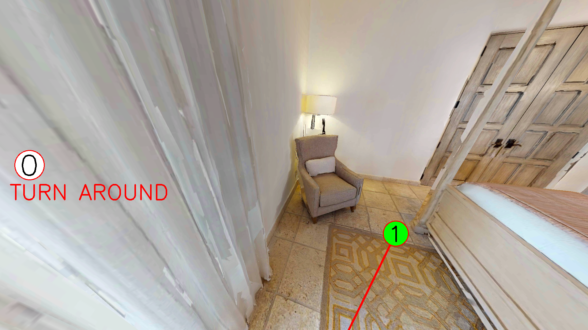
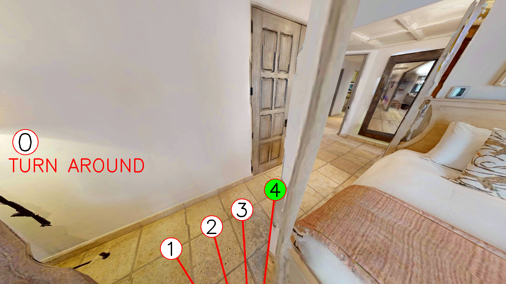

Example 1: Bed. The agent completes the goal successfully, but spends a lot of time turning around
We present VLMnav, an embodied framework to transform a Vision and Language Model (VLM) into an end-to-end navigation policy. In contrast to prior work, we do not rely on a separation between perception, planning, and control; instead, we use a VLM to directly select actions in one step. Surprisingly, we find that a VLM can be used as an end-to-end policy zero-shot, i.e., without any fine-tuning or exposure to navigation data. This makes our approach open-ended and generalizable to any downstream navigation task.
We run an extensive study to evaluate the performance of our approach in comparison to baseline prompting methods. In addition, we perform a design analysis to understand the most impactful design decisions.

Goal: chair

Goal: bed
Goal: plant

Goal: sofa

Goal: toilet

Goal: TV

Goal: chair

Goal: plant
Goal: toilet

Goal: sofa

Goal: TV

Goal: chair. The agent finds a chair but terminates too far away

Goal: bed. The agent gets stuck in between two obstacles, mistakenly thinking it can fit through
Goal: sofa. The agent finds a sofa but terminates too far away

Goal: toilet. The agent does not find the toilet in time, mistaking the laundry room for a bathroom

Goal: plant. The agent inefficiently enters a lot of dead end rooms

Goal: TV. The agent explores a long dead end and can't backtrack in time

Goal: sofa. The agent spends too much time exploring the same bedroom and bathroom

Goal: toilet. The agent explores the house well but does not find a toilet

Goal: TV. The agent finds the living room but goes past the TV without seeing it
We present VLMnav, designed as a navigation system that takes as input goal G, which can be specified in language or an image, RGB-D image, pose and subsequently outputs action a. The action space consists of rotation about the yaw axis and displacement along the frontal axis in the robot frame, which allows all actions to be expressed in polar coordinates. As it is known that VLMs struggle to reason about continuous coordinates, we instead transform the navigation problem into the selection of an action from a discrete set of options. Our core idea is to choose these action options in a way that avoids obstacle collisions and promotes exploration.

We start by determining the navigability of the local region by estimating the distance to obstacles using a depth image. Similar to other works, we use the depth image and pose information to maintain a top-down voxel map of the scene, and notably mark voxels as explored or unexplored. Such a map is used by the action proposer module to determine a set of actions that avoid obstacles and promote exploration. We then project this set of possible actions to the first-person-view RGB image with the projection component. Finally, the VLM takes as input this image and a carefully crafted prompt to select an action, which the agent executes. To succesfuly complete a navigation goal, the agent must call a special STOP action within D meters of the goal object. We use a seperate VLM call and prompt to determine when to call this termination action. In all our experiments, we use Gemini Flash as our VLM.
STEP 0
I see a bedroom with a bed on the right, a chair on the left, and a closed door in the background. Toilets are typically located in bathrooms, and there is a door in the background, so I should head towards that door. The best action to take would be to move to the right, towards the door.
{'action': 1}
STEP 1
I see a closed door to my right, and a bed in front of me. I also see a mirror on the wall, which is likely in a bathroom. I can see a reflection of a person standing in front of the mirror. I believe the bathroom is in the direction of the mirror. I should go in the direction of the mirror. I will take action 4, which will move me closer to the mirror.
{'action': 4}
STEP 2

I see a hallway with a closed door on the left, a mirror on the right, and a large wooden object against the wall to the right. I don't see any toilets. I should go forward and to the right, towards the mirror. I believe the toilet is probably in the bathroom on the other side of the mirror. Action 2 should take me in that direction.
{'action': 2}
STEP 3

I see a hallway with a door to my left and a large mirror to my right. There's another door further down the hallway. It looks like the toilet is probably behind the door to my left. I should go left. Action 1 will move me in that direction.
{'action': 1}
STEP 4

I see a hallway with a closed door on the left and an open doorway on the right. The doorway on the right leads to another hallway, and the hallway on the right is the only possible way to go. I see a closed door at the end of the hallway. Based on my knowledge of typical home layouts, the toilet is likely behind the closed door at the end of the hallway. I should go forward, which can be achieved by taking action 2.
{'action': 2}
STEP 5

I see a hallway with a door on the right and an open doorway on the left. There is a washing machine and dryer visible in the doorway on the left. I think the toilet is most likely to be in the room to the left. I should go left. Action 1 will take me in that direction.
{'action': 1}
STEP 6

I see a laundry room with a washing machine and dryer, and a door to my left. I can see into a hallway that leads to a room with a fireplace. Toilets are usually located in bathrooms, so I should go through the hallway to the right. Action 2 leads me down the hallway.
{'action': 2}
STEP 7

I see a bathroom to my right, with a toilet. It is likely that this is the nearest toilet. I should go right. Action 1 should move me in the right direction.
{'action': 1}
STEP 8

[Stopping prompt]
The image shows a bathroom with a toilet. The agent is very close to the toilet.
{'done': 1}
We evaluate PIVOT (Google 2024), a similar prompting framework for robotic tasks. At each step, an isotropic Gaussian action distribution is iteratively fit to a subset of actions chosen by the VLM. The VLM chooses an action from this final distribution to execute.
Example 1: Bed. The agent completes the goal successfully, but spends a lot of time turning around

Example 2: Toilet. The agent fails and gets stuck in the corner. The action distribution struggles to represent the multi-modality of the action space
To evaluate the direct impact of our prompting method, we run a baseline without the navigability and action proposer modules. This agent is presented with a static set of evenly spaced actions, which do not take into account navigability or exploration.

Example 1: Bed. The agent fails to complete the goal, as it gets stuck behind a chair and keeps trying to move through it

Example 2: Toilet. The agent completes the goal successfully but spends several steps stuck in the corner of the bedroom
We evaluate our approach on two common navigation benchmarks, ObjectNav and GOATBench. In addition to PIVOT and w/o nav we run a baseline prompt only, which sees a textual description of the actions, but no visual annotations. We measure Success Rate (SR), which measures accuracy in completing goals, and SPL, which measures path efficiency. We see below that our method outperforms all baseline prompting methods on both benchmarks. We note that when comparing to other state-of-the-art works on even ground, we find our performance to be inferrior.
| Method | SR | SPL |
|---|---|---|
| Ours | 50.4% | 0.210 |
| w/o nav | 33.2% | 0.136 |
| prompt only | 29.8% | 0.107 |
| PIVOT | 24.6% | 0.106 |
| Method | SR | SPL |
|---|---|---|
| Ours | 16.3% | 0.066 |
| w/o nav | 11.8% | 0.054 |
| prompt only | 11.3% | 0.037 |
| PIVOT | 8.3% | 0.038 |
@inproceedings{
goetting2024endtoend,
title={End-to-End Navigation with VLMs: Transforming Spatial Reasoning into Question-Answering},
author={Dylan Goetting and Himanshu Gaurav Singh and Antonio Loquercio},
booktitle={Workshop on Language and Robot Learning: Language as an Interface},
year={2024},
}